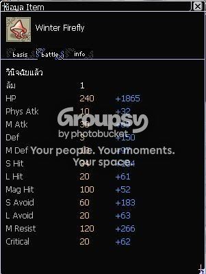
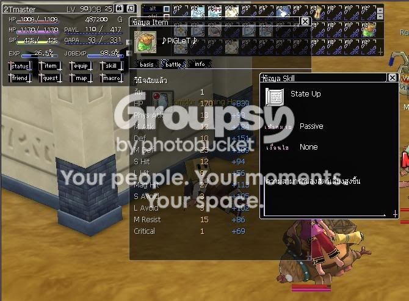

หน้า 69 จากทั้งหมด 187

โพสต์แล้ว:
เสาร์ 26 ก.ค. 2008 7:55 amโดย ECO
ปกติ Avoid ต้องเต็มก่อน Def นี่ฝ่า . . .
นี่Def 130 ละ Avoid เพิ่ง 90
โพสต์แล้ว:
เสาร์ 26 ก.ค. 2008 10:24 amโดย ECO
mresist จะเต็มแว้ว
acrobate ลูกไฟกะหนวดอยู่รรใต้ชั้น 3 ครึ่งชั่วโมง
mresist :: +205 -> +266
matk :: +67 -> +69
ของเค้าแรงจริง grow up + breeding

โพสต์แล้ว:
เสาร์ 26 ก.ค. 2008 12:04 pmโดย ECO
หึหึหึ ก็บอกแล้ว *0*)~
ลืมเปลี่ยนบรีดเดอร์ก่อนส่งเควสต์ไปสองครั้ง หมดไฟเลยตู..... OTL
โพสต์แล้ว:
เสาร์ 26 ก.ค. 2008 12:18 pmโดย ECO
ตอนนี้สับสนอยู่กะสกิล state up
ดูไม่ออกแฮะ ว่า hp max เพิ่มรึเปล่า
แต่ hp regenerate มันเพิ่มแน่ๆ แมว stat ข้างบน ตอนไม่ได้ติดเข็มบรีดเดอร์ มันดูด 52hp ทุกๆ 5sec แต่ตอนติดเข็มบรีดเดอร์มันดูด 57hp ทุกๆ 5 sec
คิดได้ 2 กรณี
- hp max ไม่เพิ่ม เพิ่มแต่ hp regenerate อีก 5 hp
- hp regenerate ไม่เพิ่ม เพิ่มแต่ hp max ก็จะเทียบได้ประมาณ 250 hp
แต่เคยมีคนทดลองกะ pet ขี่แล้ว หลอดเลือดมันเท่าเดิม ก็คิดได้อีก 2 อย่าง
- state up ไม่มีผลกับ pet ขี่
- state up มีผลกับ pet ขี่ << ถ้าเป็นกรณีนี้ แสดงว่า กรณีแรกของอันข้างบนเป็นจริง
โพสต์แล้ว:
เสาร์ 26 ก.ค. 2008 4:35 pmโดย ECO
เห็นเขาว่าผลที่ได้เพิ่มราวๆ 10% อ่ะงิ (จาก wiki)
แต่ไม่แสดงผลให้เห็น จะให้มันตบจนเกือบตายเทียบก็มิกล้า =w="
โพสต์แล้ว:
เสาร์ 26 ก.ค. 2008 8:00 pmโดย ECO
รู้สึกจะเพิ่มค่าอื่นๆ พื้นฐานทั่วไปนะ ไม่ใช่ค่าพื้นฐานโดยตรงอย่างเลือด
(Hp Def Hit Avoid)
เอาไปฟัดกับ BAndit ได้ผลมาว่า Bandit หัวทิ่มดิน - -" (หมาพันไหนฟะโหดชิบเป๋ง)
==========================
Int หากใช้สำหรับเก็บเลเวล ก็คงเอา ไม่มาก ราวๆ 2X+2X ก็เพียงพอละ
แต่ถ้า Pvp Nvn นี่แล้วแต่เป้าหมายแหะ บางคนแค่ 3X+2X ก็ เพียงพอที่จะโดนละ
แต่บางคนก็ 6X+2X ถึงจะโดน
โพสต์แล้ว:
เสาร์ 26 ก.ค. 2008 9:44 pmโดย ECO
Wiki - Psycho body -> Dem (ตัวถือปืน Psycho)
รู้สึกไม่ต้องใช้ Knowledge แฮะ (มีส่วนที่เป็นสีฟ้าอยู่ คาดว่าคงเป็น Rare)
รู้สึกแปลกๆแฮะ
อยู่ๆวันนี้ (Tako) Golem รับหินพาวของหมากับอีกคนนึงโดนถมเละในพริบตา
รับที่ 13k
พอไปดูตัวอื่นๆใน downtown ก็พบว่าจำนวนรับ power = 0 กันเยอะมากๆ
ถึงจะบอกวันเสาร์แล้วก็เถอะ
อย่างของหมานี่ตั้งไป 400
หรือคดีเดิมจะกลับมาแล้ว?
โพสต์แล้ว:
เสาร์ 26 ก.ค. 2008 9:54 pmโดย ECO
หินพาว กับ เมจิก โดนถมแหะ
คดีเดิม หรือกักตุนหว่า
ที่น่าแปลกคือ ไม่ได้โดนถมทั้งหมด โดนแค่ พาวกับ เมจิก
โพสต์แล้ว:
เสาร์ 26 ก.ค. 2008 9:55 pmโดย ECO
ลองไปเปิดประเด็นที่หมวดทั่วไปละ กลัวกระทู้พี่โนเละ >w<"
โพสต์แล้ว:
เสาร์ 26 ก.ค. 2008 10:16 pmโดย ECO
มันมีคนเข้าซักกี่คนเชียว - -
(ปกติก็เละอยู่ละนิ เพียงแต่ว่าช่วงนี้คุยเรื่อง Pet เลยเข้าลู่เข้าทางหน่อย)
โพสต์แล้ว:
เสาร์ 26 ก.ค. 2008 10:30 pmโดย ECO
เหตุที่โดนถมแค่พาวกับเมจิค ก็ง่ายนิดเดียว
- คนถมเล่นสาย ft ไม่ก็ bp ซึ่งนิยมตีของ +คริใช้ มากกว่า (ส่วนหินเลือดนี่ปกติ ไว้ตีเสื้อกัน)
ตอนนั้นของโมจิโดนตามลำดับนี้มั้ง
- พาว คริ เมจิค เลือด แต่สุดท้ายก็โดนครบทุกแบบนะ
โพสต์แล้ว:
เสาร์ 26 ก.ค. 2008 11:09 pmโดย ECO
อร๊ายยย ปืนปลอม จำได้ว่ามี แต่หายไปไหนก็ไม่รู้
-w-" เซ็ง เวลบรีดเดอร์ม่ายดั๊ยยย
โพสต์แล้ว:
เสาร์ 26 ก.ค. 2008 11:35 pmโดย ECO
หินสองอันนี้คนใช้น้อยกว่านี่
แต่ที่แปลกใจคือ วันเดียวตูมเดียวเอ๋อเลย golem รับหินเดี้ยงไป 3-4 ตัว (ของหมารับอย่างอื่นด้วยนี่เดี้ยงไปเลย =w=")
เวลไม่ได้ลองใช้วิธีสิงเปิดสองตัวแบบหมามะ ของหมายัด breeder สิงแขน (ปลิงทั้งทีเอามารับหมัดหน่อยก็ดี) เปิดเอาตัวหลักลุยไล่สับ ของหมาของขึ้นไปหน่อย เปิดดัน 4 รอบจบ 30 up ตอนตัวสุดท้ายตายพอดีโดนถีบออกจากดันเลย
ถ้าเอาธรรมดาๆ ส่ง q วันนึง (5 แต้ม) ถ้า~ 74 ก็คงราวๆเกือบ 12 ไม่ก็ 12 ที่เหลือก็ปั้มในดันต่อเอาคงซัก 3-5 วันตามความถึก
เพราะจะให้ถือมีดถือค้อนไล่ทุบเอาตามมีตามเกิดมันก็ออกจะชวนเครียดไปนิดล่ะนะ = ="
เซ็งแด่ว หวดคริ 15 ชิ้น แหกกระจายหมด +6 ได้ 5 -> +7 เหลือ 1 -> ฝุ่น
ล่มจมเลย = ="
โพสต์แล้ว:
เสาร์ 26 ก.ค. 2008 11:44 pmโดย ECO
ทำไมฝึก Atk น่าเบื่อกว่า ฝึก Def ว๊านิ = ="
โพสต์แล้ว:
อาทิตย์ 27 ก.ค. 2008 12:30 amโดย ECO
สกิล state up +HP max pet จริงๆแฮะ ประมาณ 10%

สังเกตจาก HP max กะ ในป้ายข้อมูล pet